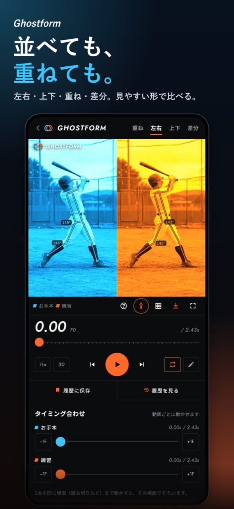
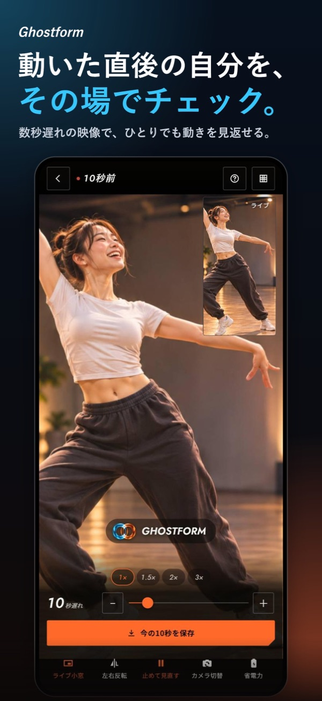

ゴルフ
同じ方向から撮ったスイングで、アドレスやインパクトの位置を比較。まずは前傾や頭の位置など、ひとつのポイントから。
動画比較を始めるiPhone版 公開中
お手本と自分。前回と今回。
2本の動画を重ねて、気になる瞬間を見比べる。
Ghostformは、いつもの練習を振り返るアプリです。
iPhone・iOS 16.0以降 ／ 広告・アプリ内購入あり


01 / 動画比較
別々に再生していた2本を、重ねて確認。頭の位置や体のラインなど、見たいところをひとつ決めると、振り返りやすくなります。
線・図形や書き出しの一部機能にはPROが必要です。
02 / ディレイ再生
カメラの映像を数秒遅れで再生。動き終わったら画面を振り返り、さっきの自分をその場で確認できます。
一人での自主練にも、選手と一緒に確認する指導にも。録画を止めて再生する手間を減らします。
ダンスでの使い方を見る
FOR YOUR PRACTICE
ゴルフ、野球、体操、ダンス、テニス、サッカー。
お手本との比較にも、自分の前回と今回の比較にも使えます。
同じ方向から撮ったスイングで、アドレスやインパクトの位置を比較。まずは前傾や頭の位置など、ひとつのポイントから。
動画比較を始める投球やバッティングの同じ局面に合わせて確認。踏み出しや上半身の位置を、重ねて見比べます。
タイミングをそろえて比べる倒立や技の途中を止めて、体のラインを確認。前回の練習と今回の動画を、1コマずつ振り返れます。
同じ瞬間を見比べるディレイ再生で、踊った直後の動きを確認。お手本の動画があるときは、ポーズやタイミングの比較にも。
ディレイ再生を見る比べる動画は、できるだけ同じ撮影方向・同じ局面で。
撮影角度が違うと、姿勢や角度の見え方も変わります。
FIRST COMPARISON
お手本と自分、または前回と今回。自分の動画同士でも始められます。
構え、踏み出し、着地など、見比べたい場面のタイミングをそろえます。
濃さを変えたり、1コマずつ送ったり。まずは気になる場所をひとつだけ。
BEFORE YOU START
無料でダウンロードでき、比較やディレイ再生などの主な機能を使えます。無料版には広告と利用上限があります。PROは買い切りで、広告なし・ロゴなし・1080p書き出しなどに対応します。価格と詳しい機能はアプリ内で確認できます。
動画と骨格解析の処理は端末内で行い、動画を外部のサーバーへ送信しません。広告などに関するデータの取り扱いは、プライバシーポリシーをご確認ください。
はい。自分の「前回と今回」の動画を比べたり、ディレイ再生で動いた直後を見返したりできます。
このページではiPhone版をご案内しています。対応端末やOSの最新情報は、App Storeの掲載情報をご確認ください。
サポートページからお問い合わせください。お使いの機種と、どの画面で何が起きたかをお知らせいただけると確認しやすくなります。
GHOSTFORM / ゴーストフォーム
iPhone・iOS 16.0以降 ／ 広告・アプリ内購入あり